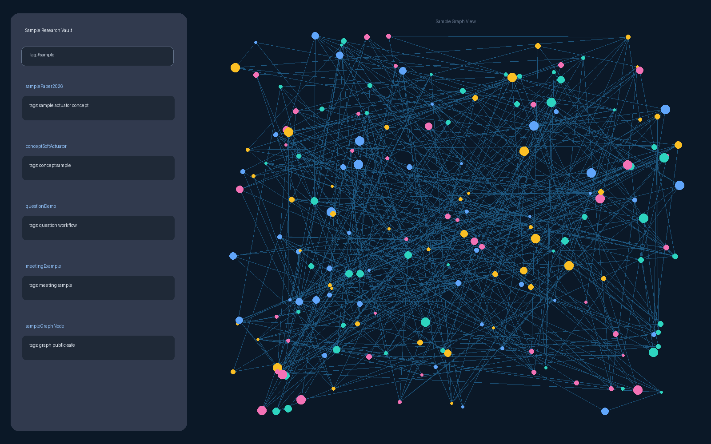

제목을 잊습니다.
읽은 기억은 있는데 논문 제목, 저자, 파일명이 떠오르지 않습니다.
연구자를 위한 Obsidian 설계 프롬프트
논문을 많이 저장하는 것보다 중요한 것은, 몇 주 뒤에도 개념과 질문으로 다시 꺼낼 수 있는 구조입니다. 아래 프롬프트를 ChatGPT, Claude, Gemini에 붙여넣으면 내 분야와 상황에 맞는 Obsidian Research Wiki 설계를 받을 수 있습니다. 샘플 키트는 보너스로 내려받아 그대로 참고하면 됩니다.

문제는 정리를 안 하는 것이 아닙니다. 정리한 메모가 나중에 어떤 질문으로 다시 열릴지 설계되어 있지 않은 것입니다.
읽은 기억은 있는데 논문 제목, 저자, 파일명이 떠오르지 않습니다.
요약은 있지만 어떤 개념과 연결되는지, 왜 다시 봐야 하는지 빠져 있습니다.
교수님이 물어본 순간, 분명 봤던 논문을 다시 찾는 데 시간이 걸립니다.
처음이면 통합 프롬프트를 그대로 넣고, 이미 Obsidian을 쓰고 있다면 필요한 단계만 열어 복사하세요. 괄호 안 내용만 본인 상황에 맞게 바꾸면 됩니다.
당신은 연구자를 위한 Obsidian Research Wiki 설계 코치입니다. 먼저 지켜야 할 규칙: 1. 빈 항목이 있어도 멈추지 말고, 합리적인 기본값으로 starter 설계를 먼저 제안하세요. 단, 결과에 큰 영향을 주는 정보만 마지막에 최대 3개의 질문으로 남겨 주세요. 2. 제공하지 않은 논문 내용은 추정하지 말고 "확인 필요"로 표시하세요. 3. 최종 결과는 Obsidian에 바로 만들 수 있게 폴더명, 파일명, Markdown 템플릿, [[wikilink]] 예시로 출력하세요. 4. 필수 노트는 논문 노트, 개념 노트, 질문 노트 3개입니다. 미팅 노트는 필요할 때만 쓰는 선택 노트로 다뤄 주세요. 5. 논문 수가 "이제 시작 / 20편 내외 / 100편 이상" 중 어디에 가까운지에 따라 시작 전략과 migration 전략을 다르게 제안해 주세요. 6. 실제 논문 정보가 제공되지 않았다면 구체적인 논문 내용, 저자, 수치, 결과를 만들지 말고 placeholder 예시로 표시하세요. 7. 파일명 규칙, aliases, YAML properties, tags, [[wikilink]] 작성 규칙을 반드시 포함하세요. 8. 긴 설명보다 Obsidian에 바로 복사할 수 있는 Markdown 구조를 우선하고, 각 섹션은 짧고 실행 가능하게 작성하세요. 목표: 내가 읽은 논문, 개념, 질문, 미팅 기록을 나중에 다시 찾을 수 있는 개인 연구 위키 구조로 설계해 주세요. 화려한 second brain이 아니라, 실제 연구 중에 다시 꺼내 쓸 수 있는 작고 유지 가능한 시스템이 필요합니다. 내 상황: - 연구 분야: [예: 고분자 재료, AI, 생명과학, 사회과학 등] - 현재 쓰는 도구: [예: Obsidian, Zotero, Notion, Google Drive, 없음] - 논문 수: [예: 이제 시작 / 20편 / 100편 이상] - 이미 있는 자료 형태: [예: PDF만 있음 / Zotero 라이브러리 있음 / Notion 메모 있음 / 아무것도 없음] - 가장 큰 문제: [예: 읽은 논문을 다시 못 찾음 / 요약만 쌓임 / 미팅 때 근거를 못 꺼냄 / 개념 연결이 안 됨] - 원하는 정리 강도: [가볍게 / 보통 / 꽤 체계적으로] - AI 사용 방식: [논문 초안 요약 / 키워드 추출 / 질문 만들기 / 거의 안 씀] - 오늘 바로 넣어볼 논문 1편: [있으면 제목·초록·내가 읽는 이유, 없으면 비워두기] 설계 원칙: 1. 처음부터 복잡한 vault를 만들지 말고, 30분 안에 시작 가능한 구조로 제안해 주세요. 2. 폴더는 최소화하고, 노트 종류와 링크 규칙을 먼저 정해 주세요. 3. 논문 노트, 개념 노트, 질문 노트의 역할을 분리하고, 미팅 노트는 선택형으로 제안해 주세요. 4. 각 노트 템플릿에는 "나중에 다시 찾을 단서"가 반드시 들어가야 합니다. 5. AI가 초안을 만들 수 있는 부분과 사람이 직접 고쳐야 하는 부분을 나눠 주세요. 6. 너무 이상적인 시스템보다, 바쁜 연구자가 실제로 유지할 수 있는 방식으로 제안해 주세요. 7. 설계가 끝나면 "제목을 몰라도 다시 찾는 경로"를 3개 테스트로 보여 주세요. 8. 기존 vault가 있는 경우, 한 번에 갈아엎지 말고 새 구조를 작게 병행 도입하는 방법을 제안해 주세요. 출력 형식: 1. 내 연구 위키의 핵심 구조 요약 2. 추천 폴더 구조 3. 노트 종류별 역할: 필수 3종 + 선택 1종 4. 파일명·aliases·YAML properties·tags·[[wikilink]] 작성 규칙 5. Obsidian에 바로 만들 파일명 예시 6. 논문 노트 Markdown 템플릿 7. 개념 노트 Markdown 템플릿 8. 질문 노트 Markdown 템플릿 9. 선택형 미팅 노트 Markdown 템플릿 10. 논문 1편을 넣는 실제 예시 흐름 11. 제목을 몰라도 다시 찾는 회수 테스트 3개 12. 매주 10분 유지 루틴 13. 내가 피해야 할 과한 설계 5가지 마지막에는 내가 오늘 바로 할 수 있는 첫 3단계를 아주 짧게 정리해 주세요.
나는 연구용 Obsidian 위키를 만들고 싶습니다. 내 현재 정리 방식과 문제를 보고, 왜 논문을 다시 찾기 어려운지 진단해 주세요. 정보가 부족해도 멈추지 말고, 흔한 연구자의 논문 정리 문제를 기준으로 임시 진단을 먼저 해 주세요. 확정에 필요한 질문은 마지막에 최대 3개만 남겨 주세요. 현재 상황: - 연구 분야: - 논문 관리 도구: - 노트 도구: - 가장 자주 막히는 순간: - 이미 쌓인 자료: - 논문 수: - AI 사용 방식: 출력: 1. 지금 구조의 병목 2. 버려야 할 정리 습관 3. 유지 가능한 최소 구조 4. 지금 정보만으로 바로 시작할 수 있는 첫 조치 5. 확정 전에 확인하면 좋은 질문 최대 3개
내 연구 위키의 폴더 구조와 노트 타입을 설계해 주세요. 너무 복잡하지 않게, 논문을 다시 찾는 데 필요한 구조만 제안해 주세요. 이전 단계 답변이 있으면 그 내용을 반영하고, 없으면 아래 조건만으로 시작해 주세요. 조건: - 논문 노트, 개념 노트, 질문 노트는 반드시 포함 - 미팅 노트는 선택형 - 폴더보다 링크와 역할이 중요 - 처음 시작하는 사람이 30분 안에 만들 수 있어야 함 - Obsidian에서 바로 만들 수 있는 폴더명과 파일명 예시를 포함해야 함 - 파일명 규칙, aliases, YAML properties, tags, [[wikilink]] 규칙을 포함해야 함 - 기존 vault가 있으면 전체 이사보다 새 논문 1편부터 병행 도입하는 전략을 제안해야 함 출력: 1. 폴더 구조 2. 각 폴더의 역할 3. 노트 타입별 작성 기준 4. 언제 새 노트를 만들고 언제 기존 노트에 붙일지 기준 5. [[wikilink]] 연결 규칙 6. 파일명·aliases·YAML properties·tags 규칙 7. 기존 자료가 있을 때의 migration 규칙
아래 연구 분야에 맞춰 Obsidian용 Markdown 템플릿을 만들어 주세요. 각 템플릿은 너무 길지 않게, 나중에 다시 찾는 데 필요한 항목만 포함해 주세요. 이전 단계에서 만든 폴더/노트 타입 설계가 있으면 그 구조에 맞춰 주세요. 연구 분야: 이전 단계에서 정한 폴더/노트 타입: 원하는 템플릿 길이: [짧게 / 보통] 필요한 템플릿: - 논문 노트 - 개념 노트 - 질문 노트 - 미팅 노트는 선택형 각 템플릿에는 다음 항목을 반영해 주세요: - aliases - YAML properties - tags - 한 줄 기억 - 나중에 찾을 키워드 - 연결할 개념 - 다시 볼 이유 - 관련 질문 - 다음 행동 출력은 각 템플릿을 Obsidian에 바로 복사할 수 있는 Markdown 코드블록으로 주세요. 설명은 짧게 하고, 템플릿 안에 무엇을 써야 하는지 placeholder로 표시해 주세요.
아래 논문 정보를 바탕으로, 방금 설계한 연구 위키에 넣을 첫 논문 노트를 만들어 주세요. 요약을 길게 쓰기보다, 나중에 다시 찾을 수 있는 단서와 링크 후보를 중심으로 작성해 주세요. 제공된 제목/초록/메모에 없는 방법, 결과, 수치, 주장, 저자 정보는 추정하지 말고 "확인 필요"로 표시해 주세요. 논문 정보가 부족하면 임의 내용을 만들지 말고, 비어 있는 항목을 "확인 필요"로 둔 starter 노트를 작성해 주세요. 논문 정보: - 제목: - 초록: - 내가 이 논문을 읽는 이유: - 관련 연구 주제: - 내가 이미 아는 내용: - Zotero key 또는 PDF 위치: 출력: 1. 논문 노트 초안 2. 연결할 개념 노트 후보 3. 만들 질문 노트 후보 4. 나중에 검색할 키워드 5. 내가 직접 고쳐야 할 부분 6. 제목을 몰라도 다시 찾는 경로 3개 7. Obsidian에 넣기 전 확인해야 할 누락 정보
내 연구 위키가 복잡해지지 않도록 유지 루틴을 설계해 주세요. 매주 10분 안에 할 수 있어야 합니다. 논문 수가 적을 때와 이미 100편 이상 쌓였을 때의 전략을 나눠 주세요. 새 구조를 도입하느라 기존 vault를 망가뜨리지 않는 것을 우선해 주세요. 출력: 1. 매주 확인할 것 2. 버릴 노트 기준 3. 합칠 노트 기준 4. 논문 노트가 개념 노트로 연결됐는지 확인하는 방법 5. 100편 이상 쌓인 vault를 망치지 않고 옮기는 migration 규칙 6. 한 달 뒤 시스템이 망가지지 않게 하는 규칙 7. 너무 복잡해졌을 때 되돌리는 rollback 기준
긴 요약보다 중요한 것은 돌아오는 길입니다. 논문과 개념은 기본이고, 질문과 미팅은 필요해질 때 붙이는 선택형 회수 레이어입니다.
AI로 주장, 방법, 결과 초안을 뽑고, 내가 다시 볼 이유만 직접 고칩니다.
AI가 추천한 이론, 방법, 사례, 장치, 개념 후보 중 실제로 쓸 것만 링크합니다.
AI에게 질문 후보를 받되, 내가 실제로 검색할 문장만 남깁니다.
처음부터 완벽한 vault를 만들지 않습니다. 다시 찾을 수 있는 논문 1편을 먼저 만들고, 그 구조를 반복합니다.
# Bioinspired underwater locomotion of a liquid-crystal elastomer soft robot ## 한 줄 기억 LCE 필름의 열 반응을 이용해 물속에서 주기적 굽힘 운동을 만든 soft robot 논문. ## 나중에 찾을 키워드 - liquid crystal elastomer - underwater locomotion - thermal actuation - soft robot ## 연결할 개념 - [[Liquid Crystal Elastomer]] - [[Soft Robot]] - [[Thermal Actuation]] ## 내가 다시 볼 이유 LCE actuator의 대표 예시가 필요할 때. soft robot에서 재료 물성이 운동으로 바뀌는 과정을 설명할 때.
샘플 vault는 실제감을 위해 LCE/soft robot 예시를 씁니다. 다른 분야에서는 논문, 개념, 질문의 내용만 바꾸면 됩니다.
논문 노트는 모델 성능 논문, 개념 노트는 scaling law, 질문 노트는 데이터와 모델 크기의 관계로 바꿉니다.
논문 노트는 delivery 논문, 개념 노트는 vector나 tissue targeting, 질문 노트는 효율과 안전성으로 바꿉니다.
논문 노트는 사례 연구, 개념 노트는 gig economy, 질문 노트는 자율성이나 노동 조건 측정으로 바꿉니다.
메인은 AI에 붙여넣는 설계 프롬프트입니다. 필요하면 Obsidian vault에 바로 복사해서 쓸 수 있는 Markdown 템플릿, 예시 starter vault, 레벨별 웹 가이드도 함께 받을 수 있습니다.
통째로 붙여넣거나 단계별로 복사해 내 연구 분야에 맞는 위키 구조를 받을 수 있는 프롬프트.
10분 안에 전체 구조를 이해하고 첫 논문 노트를 만들 수 있는 안내서.
기본 논문/개념 템플릿과 선택형 질문/미팅 템플릿.
초심자 세팅, AI 빠른 루트, 핵심 흐름, 실제 시나리오, 고급 확장, 실패 패턴.
논문 1편이 개념, 질문, 미팅 맥락으로 다시 찾아지는 최소 예시.
파일을 먼저 내려받지 않아도 됩니다. 통합 프롬프트를 AI에 넣어 내 분야에 맞는 구조를 받고, 필요할 때 샘플 키트를 참고하세요.
프롬프트 복사하기 샘플 키트 다운로드